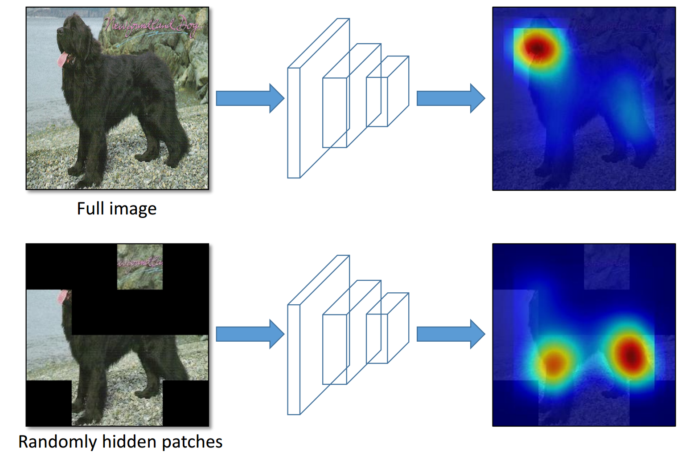
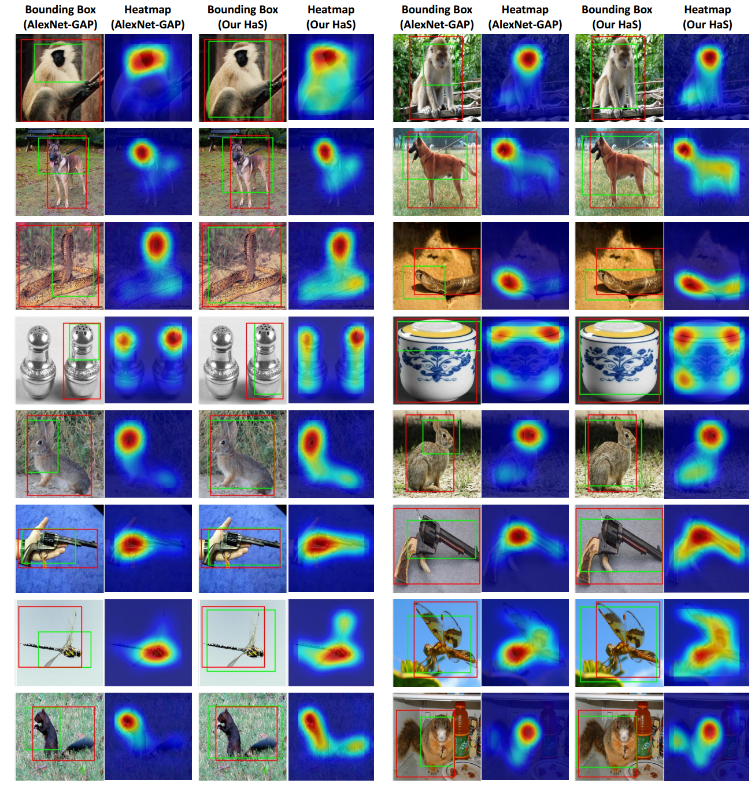

Hide-and-Seek: Forcing a Network to be Meticulous for Weakly-supervised Object and Action Localization

Main idea. (Top row) A network tends to focus on the most discriminative parts of an image (e.g., face of the dog) for classification. (Bottom row) By hiding images patches randomly, we can force the network to focus on other relevant object parts in order to correctly classify the image as ’dog’.
In ICCV 2017
People
Abstract
We propose `Hide-and-Seek', a weakly-supervised framework that aims to improve object localization in images and action localization in videos. Most existing weakly-supervised methods localize only the most discriminative parts of an object rather than all relevant parts, which leads to suboptimal performance. Our key idea is to hide patches in a training image randomly, forcing the network to seek other relevant parts when the most discriminative part is hidden. Our approach only needs to modify the input image and can work with any network designed for object localization. During testing, we do not need to hide any patches. Our Hide-and-Seek approach obtains superior performance compared to previous methods for weakly-supervised object localization on the ILSVRC dataset. We also demonstrate that our framework can be easily extended to weakly-supervised action localization.
Paper
|
|
Additional Materials
Interesting Results

We compare our approach with AlexNet-GAP [59] on the ILVRC validation data. For each image, we show the bounding box and CAM obtained by AlexNet-GAP (left) and our method (right). Our Hide-and-Seek approach localizes multiple relevant parts of an object whereas AlexNet-GAP mainly focuses only on the most discriminative part. For example, in the first, second and fifth rows, our method localizes the full body of the animals while AlexNet-GAP only focuses on the face. Similarly, our method can capture the tail of the squirrels and snakes in the third and last rows, which are missed by AlexNet-GAP. We can even localize the wings of an insect, and front part of the gun in the second and third last rows, respectively.
Acknowledgments
This work was supported in part by Intel Corp, Amazon Web Services Cloud Credits for Research, and GPUs donated by NVIDIA.
Comments, questions to Krishna Kumar Singh